7. Creating Vector Layers (Digitizing)
QGIS provides easy-to-use yet very powerful digitizing tools. Digitizing or digitization is a process of encoding map coordinates and attributes in digital form. QGIS allows you to create and edit vector data using various data sources such as text files, paper maps, or satellite imagery. This exercise will guide you through the basic interface of vector digitizing using QGIS.
7.1. Creating a new project
1. Open QGIS and create a new project. In the menu, select
–>  New.
New.
2. Open Properties –> Project Properties and click the Coordinate Reference System (CRS) tab. Set the following options.
In the Coordinate Reference System, choose Geographic Coordinate Systems –> WGS 84/Pseudo Mercator.
7.2. Loading raster data
1. To load raster data, select –> Add Layer –>  Add Raster Layer. A prompt may appear asking for the Coordinate Reference System.
Select Projected Coordinate Systems –> WGS 84/Pseudo Mercator.
(The raster to be opened was saved from QuickMapServices Google Satellite, so its original projection must be used to avoid layer misalignment in the map canvas.)
Add Raster Layer. A prompt may appear asking for the Coordinate Reference System.
Select Projected Coordinate Systems –> WGS 84/Pseudo Mercator.
(The raster to be opened was saved from QuickMapServices Google Satellite, so its original projection must be used to avoid layer misalignment in the map canvas.)
{kind=link}
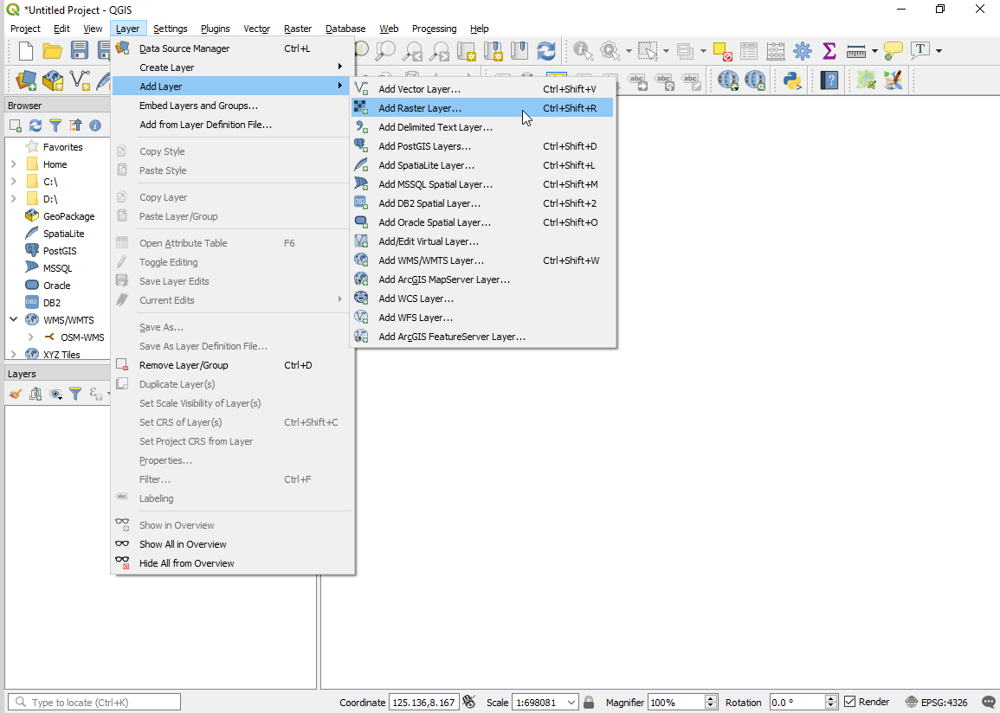
{kind=link}
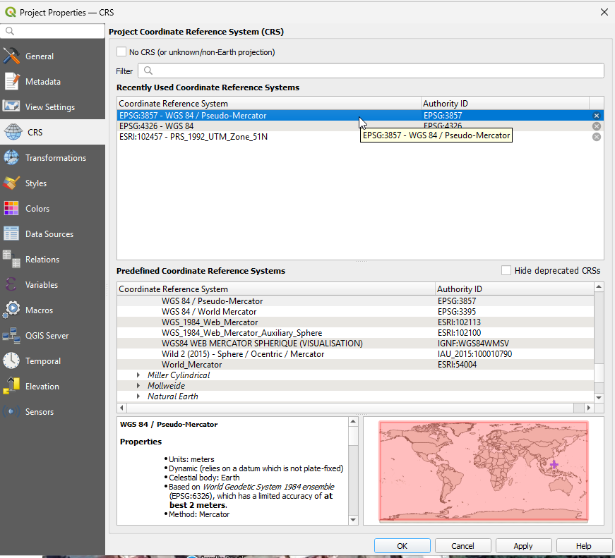
Open the Raster data file directory and
Valderrama_town-proper.jpg. After setting the raster’s coordinate reference system, right click and click as the raster might disappear from the map canvas.
as the raster might disappear from the map canvas.
Explore other raster setting using the Raster Layer Properties window.

Note
A Raster dataset is composed of rows (running across) and columns (running down) of Pixel (also known as cells or grids). Each pixel represents a geographical region, and the value in that pixel represents some characteristics of that region.
Images with a pixel size covering a small area are called ‘high resolution’ images because it is possible to make out a high degree of detail in the image. Images with a pixel size covering a large area are called ‘low resolution’ images because the amount of detail the images show is low.
Some raster data have two files included. For example, a file with the jpg extension is the image and the file with the extension jgw is the world file. World files describe the location, scale and rotation of the map. By adding a world file in any image, GIS applications can read and georeference almost any image. However, the world file does not give the proper coordinate reference system of the raster. More information here. In QGIS, you have to properly set the CRS for raster with world file.
7.3. Loading Vector data
1. Open the following vectors:
brgys.shp
roads.shp
2. Re-order all the layers and create a suitable symbology and color scheme based on the image below. Don’t forget to right click and Zoom to Layer
{kind=link}
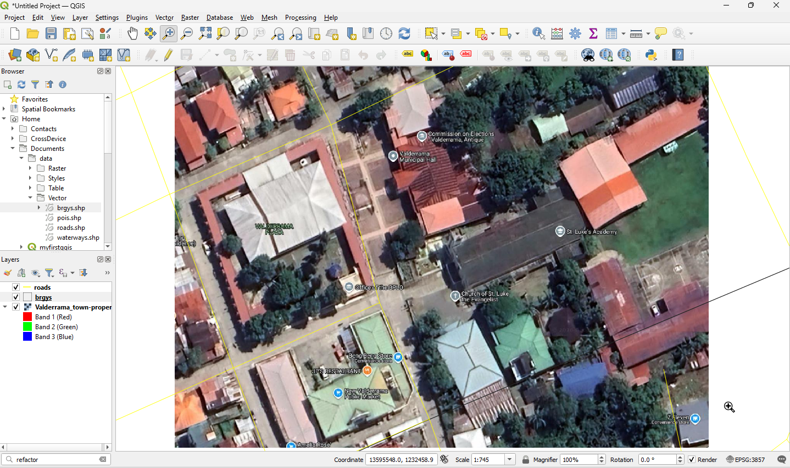
We will use the Valderrama_town-proper.jpg raster as our primary source for a structures_digitized layer
that will include features such as Brooke’s Pt.’s municipal hall, town gymnasium and
7.4. Creating a new vector layer
We will now create a new vector layer, to digitize structures_digitized. We will use a polygon layer to represent this data.
1. To create a new vector layer select –>
Create Layer –> 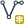
{kind=link}
2. In the Geometry type option, choose Polygon.
3. In the Specify CRS, select EPSG 4326 - WGS 84.
4. In the New Field, add name in the Name field
and choose Text Data as the data type. Then, click
Add to Attributes List. The newly added attribute field is
added in the list.
5. Add another attribute column. In the New Field, add type in
the Name field and choose Text Data as the data type. Then,
click Add to Fields List.
In the name attribute field, we will encode the name of the feature. In the
type attribute field we encode the type of structure (stadium, building, mall).
Click OK.
{kind=link}
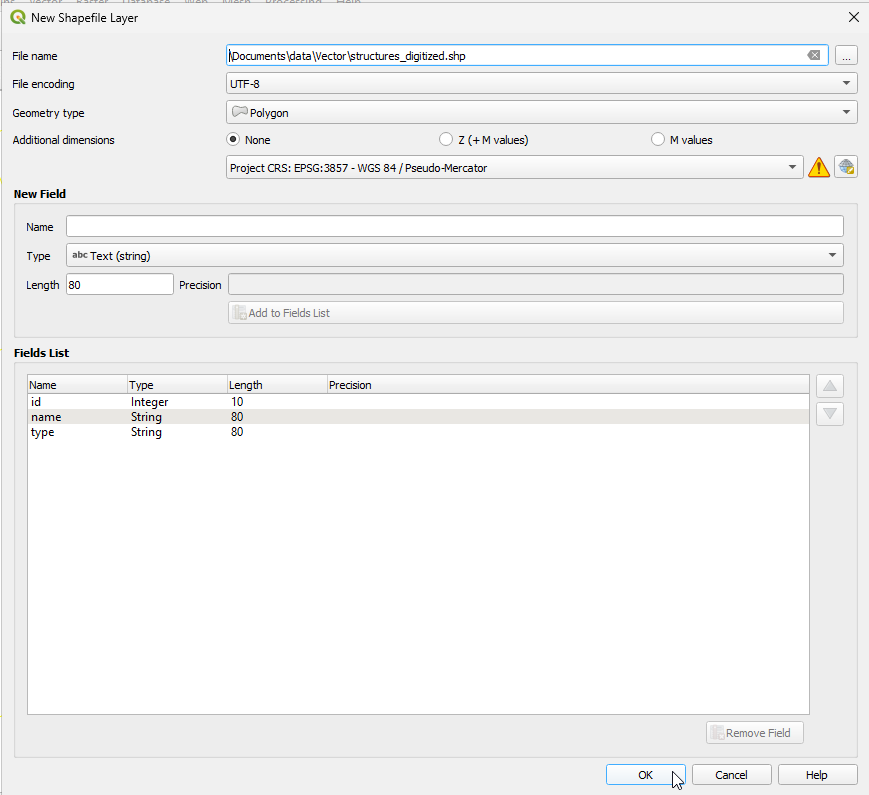
Tip
Limit field names to a maximum of 10 characters and avoid special characters
(such as &, #, @ { ) and spaces.
6. Click the  symbol. A new window will appear for the file name and location of the data within your
directory. Use the file name,
symbol. A new window will appear for the file name and location of the data within your
directory. Use the file name, structures_digitized.shp. Click Save.
{kind=link}
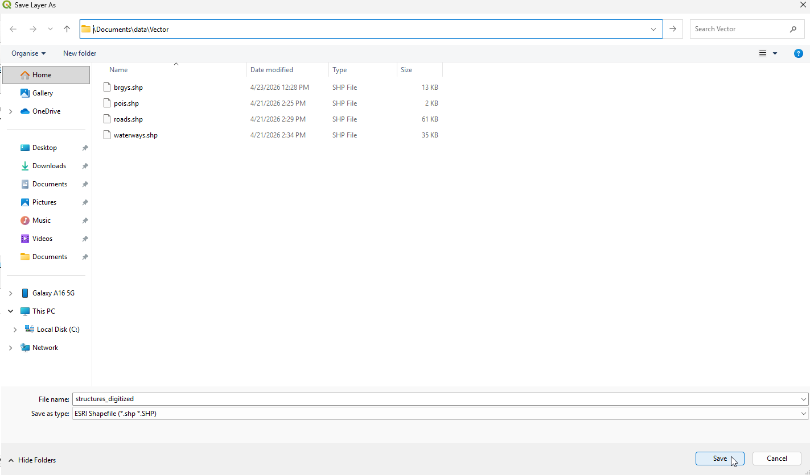
In the New Shapefile Layer window, Click OK. You now have a blank structures_digitized layer.
You can create different point, and polygon layers by selecting Point or Polygon at the New Shapefile Layer window.
7.5. Setting options for digitizing
Before we can begin digitizing, we must set the snapping tolerance to a value that allows us an optimal editing of the vector layer geometries.
Tip
Snapping tolerance is the distance QGIS uses to search for the closest vertex and/or segment you are trying to connect when you set a new vertex or move an existing vertex. If you aren’t within the snap tolerance, QGIS will leave the vertex where you release the mouse button, instead of snapping it to an existing vertex and/or segment.
1. To set the snapping tolerance, select Settings –> 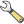
{kind=link}
2. In the Snapping Option window, select the following settings:
{kind=link}
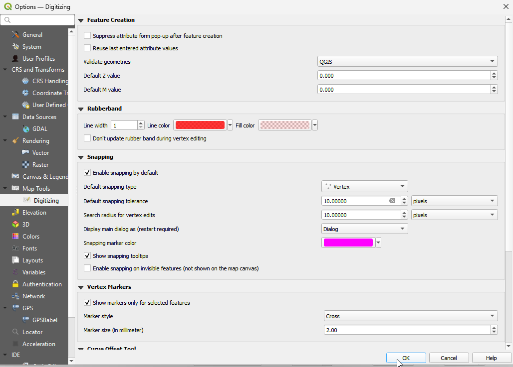
When you start editing the structures_digitized layer, new vertices will snap if it is within 10 pixels of another vertex.
3. Save your project.
7.6. Digitizing vectors
We will now start digitizing structures_digitized.
Note
This process is called heads-up or on-screen digitizing. This is an interactive process, in which a map is created using a previously digitized or scanned information. It is called “heads-up” digitizing because the attention of the user is focused on the screen.
1. Hide all layers except the structures_digitized and Valderrama_town-proper layer. Click the checkmark preceding the name of the layer in the Map Legend
view to hide/show layers.
Zoom-in to an area, where the Valderrama Municipal Hall is located.
3. Select the 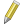structures_digitized layer, right-click and select
{kind=link}
{kind=link}
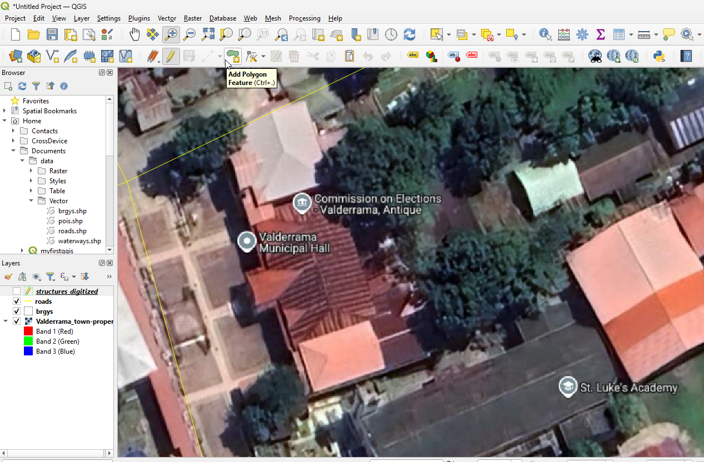
For each feature, you first digitize the geometry, then encode the attributes.
4. To digitize the geometry, click the 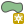
{kind=link}
{kind=link}
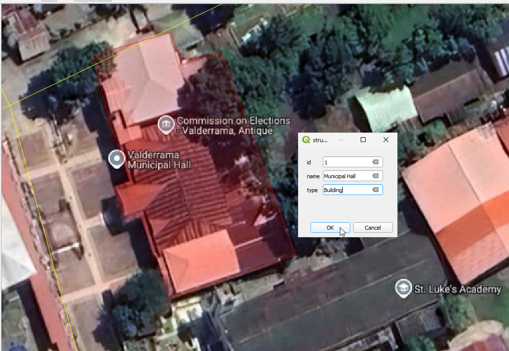
For points and lines, keep on left-clicking for each additional vertex you wish to capture. When you have finished adding vertices, right-click anywhere on the Map view to confirm you have finished entering the geometry of that feature.
The attribute window will appear, allowing you to enter the information for the
new feature. Add the type of structure in the type field and the name of the
feature in the name field.
{kind=link}
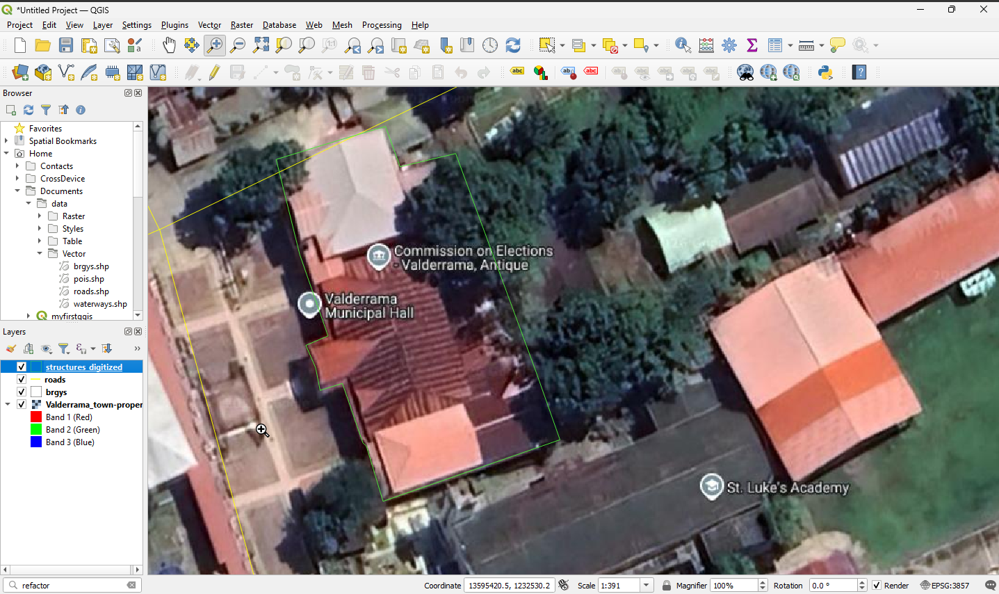
To save your editing session, Toggle Editing
and click  Save.
Save.
Tip
In some cases, you will reach the edge of the Map View but you would like to continue adding new vertices. When this happens, use the arrow keys or press the spacebar while using your mouse to pan across the Map View.
The Node Tool
The 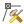
{kind=link}
Basic operations
Start by activating the Node Tool and selecting some features by clicking on it. Red circles appear at each vertex of this feature. Functionalities are:
Selecting vertex: Selecting is easy: just click on vertex and it will become enlarged. Vertices can be selected at once when clicking somewhere outside the feature and opening a rectangle where all vertices inside will be selected. When selecting more vertices, the Shift key can be used to select more vertices. On the contrary, Ctrl key can used to invert selection of vertices.
Adding vertex: Just double click near some edge and a new vertex will appear on the edge near the cursor. Click for the third time to move it.
Deleting vertex: After selecting vertices for deletion, click the Delete on your keyboard.
For more information on the basic operations visit this site.
The rest of the basic editing tools are explained below:
Toggle editing - Enable editing of the selected vector layer.
|saveedit| Save edits - save your editing session in the currently selected layer. This is different from Saving your project.
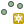
Capture Point - add point features.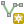
Capture Line - add line features.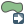
Move Feature - move location of a selected feature.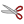
Cut Features - delete a selected feature(s) from the existing layer and place it on a “spatial clipboard”.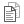
Copy Features - place selected feature(s) into the “spatial clipboard”.Paste Features - paste feature(s) from the “spatial clipboard” to the currently selected and editable layer.
{kind=link}
{kind=link}
{kind=link}
{kind=link}
{kind=link}
{kind=link}
{kind=link}
Full description of the editing tools and other advanced features available in the QGIS User’s Manual.
5. Finish editing the structures_digitized layer.
6. Save your project.
Tip
Remember to toggle Toggle Editing off regularly. This allows you to save your recent changes, and also confirms that your data source can accept all your changes.
7.6.1. Additional Youtube Video
For the offline version of this video click this link.